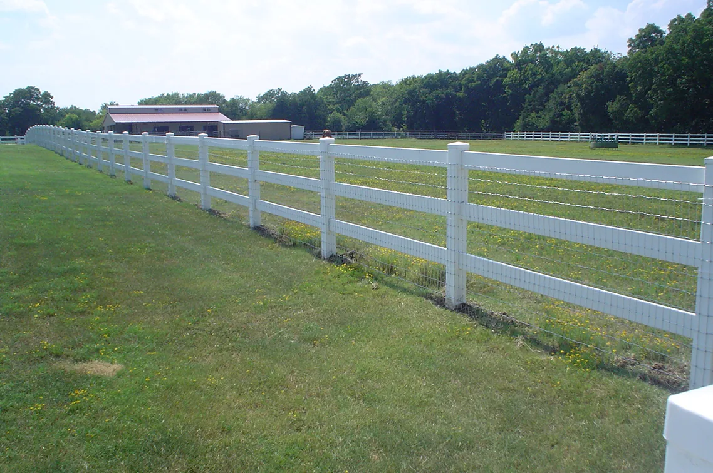

Your property.
Better defined.
Residential and commercial fence installation, repairs and gate solutions from a local Denton company that knows the value of getting the details right.
Good work begins with good people.
Denton Fence, LLC serves homeowners and commercial customers in Denton and the surrounding area. From new construction to repairs, our focus is on quality work, straightforward service and attention to the details.
Get to Know UsDenton, Texas
commercial spaces
and gate solutions
Every space has
its own story.
Privacy. Openness. A clear boundary. Explore some of the fencing styles we work with.

Wood
Privacy.
Privacy fencing in wood, with a variety of published examples of cedar and board-on-board installations.
Discover Wood Fencing
Ornamental
Iron.
Defined property lines with the open look of ornamental iron fence installations.
Explore Iron Fences
Ranch
Style.
Traditional ranch-style fencing for larger outdoor spaces and open properties.
See Ranch Styles
The right solution
for your space.
Different properties call for different approaches. Explore the fence types, care and gate solutions Denton Fence offers.
Experience you can build on.
Denton Fence is a local business serving the Denton community, with owner Cliff Davis bringing more than 35 years of personal experience in the fence industry.
About Denton FenceOwner Cliff Davis — personal experience
“A great fence that is attractive, strong & functional!”— L. Thomas, Denton, TX
See the difference.
Real fence examples from Denton Fence's project gallery. Different materials, different settings, one clear focus on the finished result.
Explore the Gallery



Ready to take
the next step?
Tell Denton Fence what you have in mind. Start with a quote request or give the team a call.